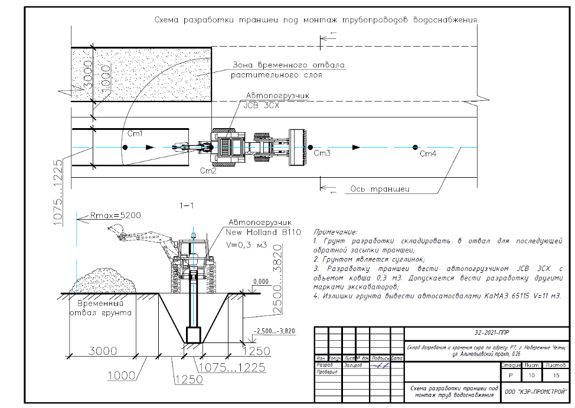
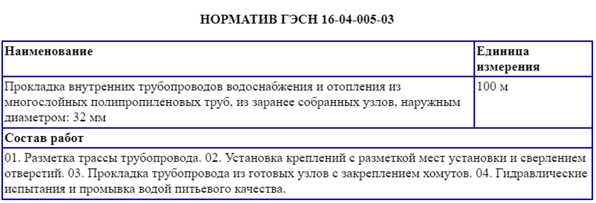
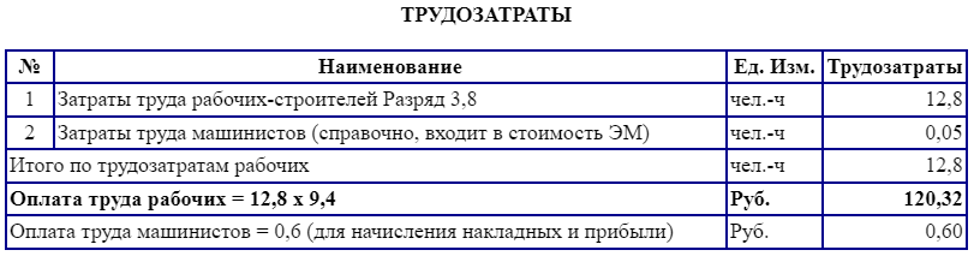
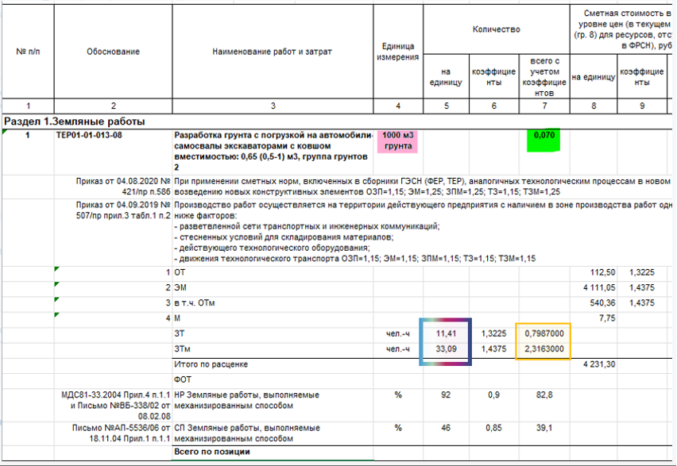

Учимся уверенно заполнять технологические карты (ТК)

В этом уроке научитесь заполнять технологические карты, оформлять графические части, подсчитывать затраты труда и машинного времени. Усвоите отличия между ТК и ТТК и поймете, когда их используют. Знание этих правил сэкономит рабочее время специалиста ПТО.
Начнем с основных понятий.
Что такое ТК
Технологическая карта (ТК) – это организационно-технологический документ, который описывает технологический процесс выполнения определенных работ на строительной площадке.
ТК содержит:
- последовательность операций,
- методы и способы их выполнения,
- используемое оборудование,
- материалы,
- требования к качеству,
- мероприятия по безопасности.
- ТК оформляется на вид работ.
ТК входит в состав проекта производства работ (ППР). Но также ее могут разрабатывать отдельно в случаях, когда подрядчик выполняет определенный вид работ. Например, монтаж системы отопления.
Пример. Вид работ: строительство спортивного центра
Нужно разработать ППР с технологическими картами по видам работ.
Примерный состав ТК на виды работ:
- погрузочно-разгрузочные работы;
- входной контроль изделий, материалов, конструкций;
- земляные работы;
- устройство фундаментной плиты;
- производство монолитных работ;
- монтаж металлических конструкций каркаса,
- каменные работы,
- кровельные работы,
- монтаж окон, ворот и дверей,
- устройство фасада;
- устройство наружных сетей водоснабжения и водоотведения;
- устройство внутренних сетей водоснабжения и водоотведения;
- электромонтажные работы;
- устройство систем отопления;
- устройство систем вентиляции;
- отделочные работы.
Пример. Вид работ: монтаж системы пожарной сигнализации
Два варианта действий:
- Разработать ППР и ТК. Подходит, если договором подряда предусмотрена подготовка именно ППР.
- Разработать только ТК. Подходит, если договором не установлены конкретные требования к виду организационно-технологического документа. Можно обойтись только ТК, так как вид работ в данном примере один: монтаж системы ПС.
Какие нормативы регламентируют правила ТК
- СП 48.13330.2019 «Организация строительства»,
- МДС 12-29.2006 «Методические рекомендации по разработке и оформлению технологической карты».
Перед началом работ запросите внутренние регламенты по разработке ТК и ознакомьтесь с ними. У каждой организации они могут быть разные. Изучите договор-подряда, посмотрите требования к составу ТК, порядку оформления и согласования.
Кто разрабатывает ТК
ТК разрабатывает организация, которая выполняет работы, то есть подрядчик. Организации-разработчику не нужна специальная лицензия или членство в СРО.
Из чего состоит ТК
Состав ТК регламентировали в СП 48.13330.2019 (приложение А).
ТК состоит из следующих разделов:
- Область применения;
- Общие положения;
- Организация и технология выполнения работ;
- Требования к качеству работ;
- Потребность в материально-технических ресурсах;
- Обеспечение пожарной безопасности;
- Техника безопасности и охрана труда;
- Технико-экономические показатели.
Состав технологической карты изменяют и дополняют в зависимости от специфики и сложности технологического процесса.
Например, когда разрабатывают и описывают простой технологический процесс, могут отсутствовать разделы «Общие положения» и «Технико-экономические показатели». А когда разрабатывают и описывают сложный технологический процесс, раздел «Организация и технология выполнения работ» могут разделить на два раздела: «Организация работ» и «Технология работ».
В каком порядке разрабатывают ТК
Остановимся подробнее на шагах, которые помогут грамотно разработать ТК.
Шаг 1. Изучите проектную документацию
Действия:
- определить виды работ,
- составить примерную технологическую последовательность работ,
- изучить раздел «Проект организации строительства» (ПОС) проектной документации,
- если нужно, составить составить список ТК.
Шаг 2. Оформите пояснительную записку (ПЗ)
| Наименование раздела ТК | Наполнение раздела |
| 1. Область применения |
|
| 2. Общие положения | Раздел исключают, если описывают простой технологический процесс.
|
| 3. Организация и технология выполнения работ | Раздел подразделяем на подразделы: подготовительные, основные и заключительные работы. |
| 3.1 Подготовительные работы |
|
| 3.2 Основные работы |
|
| 3.3 Заключительные работы |
|
| 4. Требования к качеству работ |
|
| 5. Потребность в материально-технических ресурсах |
|
| 6. Техника безопасности и охрана труда |
|
| 7. Технико-экономические показатели | Раздел может быть исключен, если описывают простой технологический процесс.
|
Изучите образцы таблиц, которые подготовили эксперты Школы.
| № п/п | Наименование и последовательность технологических операций | Ед.изм. | Количество | Наименование машин, оборудования, инструмента | Состав бригады |
| 1 | Разработка траншеи механизированным способом | м3 | 253 | Экскаватор JCB 3CX | Машинист экскаватора, землекоп |
| 2 | Устройство песчаного основания | м3 | 54 | Экскаватор JCB 3CX | Машинист экскаватора, землекоп |
Примечание: данные по объемам работ берут из рабочей документации, сметы или ведомости объемов работ.
| Наименование технологического процесса и его операций | Контролируемый параметр (по какому нормативному документу) | Допускаемые значения параметра, требования качества | Способ (метод) контроля, средства (приборы) контроля |
| Подготовительные работы | Фиксация на месте, разбивка отметок и привязок | Ошибки разбивки границ нижнего контура и верхней бровки котлована относительно основных осей здания не должны превышать в плане 5 см. | Инструментальный Нивелир, стальная рулетка |
| Разработка грунта в котловане и траншее | Проверка вертикальных отметок дна котлована или траншеи с учетом недобора | - для экскаваторов с механическим приводом по видам рабочего оборудования: - драглайн +25 см; - прямого копания +10 см; - обратная лопата +15 см; - для экскаваторов с гидравлическим приводом +10 см; - одноковшовыми экскаваторами, с планировочными ковшами, зачистным обор-ем и другим спец. оборудованием для планировочных работ, экскаваторами-планировщиками +5 см | Измерительный
Нивелир, стальная рулетка |
| Проверка размеров котлована или траншеи в плане по низу и по верху | +5 см | Измерительный, стальной метр | |
| Проверка состояния откосов, крутизны откосов | не допускается сосредоточенная фильтрация, вынос грунта и оплывание откосов | Визуально, шаблоном |
| Наименование технологического процесса и его операций | Наименование машины, технологического оборудования, тип, марка | Основная техническая характеристика, параметр | Количество |
| Разработка котлована | Komatsu PC 220 | Емкость ковша – 1,5 м3. | 3 |
| Разработка траншей, устройство песчаного основания | Экскаватор-погрузчик JCB JX3 | Емкость ковша – 0,25 м3 | 2 |
| Перевозка грунта | Автосамосвал Камаз 65115 | Объем 18 м3 | 6 |
| Срезка растительного слоя грунта | Фронтальный погрузчик XCMG ZL30G | Объем ковша -1.7 м3, грузоподъемность 3 т | 2 |
| Устройство песчаного основания | Автопогрузчик New Holland B110 | Объем ковша -1 м3 | 1 |
| Наименование технологического процесса и его операций | Наименование технологической оснастки, инструмента, инвентаря и приспособлений, тип, марка | Основная техническая характеристика, параметр | Количество |
| Измерение геометрических величин | Стальная землемерная лента тип ЛЗ-50 | Длина 50 м | 1 |
| Измерение геометрических величин | Рулетка металлическая | Длина 5 м | 3 |
| Ручная разработка грунта | Лопата совковая | - | 3 |
| Ручная разработка грунта | Лопата штыковая | - | 3 |
| Наименование технологического процесса и его операций, объем работ | Наименование материалов и изделий, марка, ГОСТ, ТУ | Единица измерения | Норма расхода на единицу измерения | Потребность на объем работ |
| Устройство песчаного основания под трубопроводы | Песок строительный ГОСТ 8736-2025 | м3 | 1,1 | 54 |
Примечание: норму расхода можно брать из сметы или сборников сметных нормативов (н-р, ГЭСН).
| № | Технико-экономические показатели | Ед.изм. | Кол-во |
| 1 | Продолжительность выполнения работ | месяц | 8 |
| 2 | Трудоемкость (затраты труда) | чел-ч | 8510,6 |
| 3 | Затраты машинного времени | маш-ч | 302,39 |
| 4 | Средняя численность персонала | чел. | 6 |
| 5 | Сметная стоимость работ | тыс.руб. | 2 354 |
Шаг 3. Оформите графическую часть ТК
Графическая часть ТК может содержать технологические схемы работ.
Пример 3.
Когда разрабатывают ТК на земляные работы, могут использовать схемы:
- снятия растительного слоя грунта,
- разработки траншеи,
- устройства песчаного основания,
- обратной засыпки.
Технологические схемы в ТК не обязательны.
Рекомендуем изучить внутренние правилами заказчика, поскольку компании могут требовать включить схемы в техническое задание. Например, в Роснефти.

Схемы должны отражать технологию производства работ на конкретном объекте.
Что указывают на схемах
- разбивку на захватки. Захватка – часть здания или сооружения для строительно-монтажных или ремонтно-строительных работ, на которой бригада непрерывно ведет один или несколько видов работ;
- разрезы здания или сооружения с указанием строительной техники;
- привязку основных машин и механизмов;
- опасные и рабочие зоны;
- временные ограждения;
- направление работ: начало, окончание.
Если ТК оформляют на внутренние работы, например, на устройство системы вентиляции или отделочные работы, то графическая часть содержит планы здания с указанием мест установки средств подмащивания, либо отсутствует.
Как оформлять калькуляцию затрат труда и машинного времени
| Наименование технологического процесса и его операций | Объем работ | Норма времени рабочих, чел.-ч | Норма времени машин, маш.-ч | Затраты труда рабочих, чел -ч | Затраты времени машин, маш -ч |
| 1 | 2 | 3 | 4 | 5 | 6 |
| Прокладка внутренних трубопроводов водоснабжения и отопления из многослойных полипропиленовых труб, из заранее собранных узлов, наружным диаметром: 32 мм | 50 м | 0,128 | 0,0005 | 6,4 | 0,025 |
| Прокладка внутренних трубопроводов водоснабжения и отопления из многослойных полипропиленовых труб, из заранее собранных узлов, наружным диаметром: 40 мм | 750 м | 0,1251 | 0,0008 | 93,825 | 0,6 |
| Прокладка трубопроводов водоснабжения из стальных водогазопроводных оцинкованных труб диаметром: 15 мм | 80 м | 0,337 | 0,0054 | 26,96 | 0,432 |
Примечание:
Столбик 1 – наименование работ в соответствии с ведомостью объемов работ или сметой.
Столбик 2 – объем работ в соответствии с рабочей документацией, ведомостью объемов работ или сметой.
Столбики 3 и 4 – норму времени берете из сметы или сборников сметных нормативов. Например, ГЭСН.
Столбик 5 – произведение 2 и 3 столбиков.
Столбик 6 – произведение 2 и 4 столбиков.
Как определить нормы затрат труда по сборнику ГЭС


Так как единица измерения – 100 м, то на 1 м затраты труда рабочих составят 12,8/100=0,128 человеко-часов, затраты труда машинистов на 1 м – 0,05/100=0,0005 машино-часов.
Эти данные заносят в столбцы 4 и 5 расчета.
Далее определяем:
Затраты труда рабочих на весь объем: 0,128*50=6,4 человеко-часов.
Затраты времени машин на весь объем: 0,0005*50=0,025 машино-часов.
Как определить нормы затрат труда по смете
Рассмотрите пример, который подготовили эксперты Школы.

По этому примеру заполняем калькуляцию:
| Наименование технологического процесса и его операций | Объем работ | Норма времени рабочих, чел.-ч | Норма времени машин, маш.-ч | Затраты труда рабочих, чел -ч | Затраты времени машин, маш -ч |
| 1 | 2 | 3 | 4 | 5 | 6 |
| Разработка грунта с погрузкой на автомобили-самосвалы экскаваторами | 70 м3 | 0,001141 | 0,003309 | 0,7987 | 2,3163 |
Теперь разберем еще одну разновидность технологических карт, которую вы встретите в работе.
Что такое типовая технологическая карта и когда ее используют
Типовая технологическая карта (ТТК) — это стандартный документ, который описывает технологический процесс выполнения определенных видов строительных работ.
В отличие от обычной технологической карты, которую разрабатывают для конкретного объекта или проекта, типовую карту создают для повторяющихся, часто встречающихся операций. Ее могут использовать на различных объектах без необходимости значительных изменений.
Характеристики типовой технологической карты
- Универсальность: предназначена для проектов, где выполняют аналогичные работы;
- Стандартизация: включает стандартные методы, последовательности действий, материалы и оборудование, что упрощает и ускоряет проектирование и выполнение работ;
- Повышение эффективности: использование типовой карты сокращает время, которое тратят на подготовку документации и повышает производительность труда.
Пример
ТТК для монтажа бетонных плит перекрытия в зданиях определенного типа содержит стандартные операции:
- подготовка основания,
- подъем и укладка плит, их закрепление и контроль качества.
ТТК используют на любом объекте с аналогичными условиями.
Представители строительного контроля не используют ТТК. Каждый объект уникален, поэтому ТТК сложно согласовать. В 90% случаев требуют привязать ТТК к объекту.
В следующем уроке освоите правила, по которым оформляют и согласовывают другие важные для специалиста ПТО документы – ППРпс и ППРк.